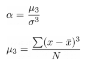

Samostalni zadatak za vježbu 5
Radit ćemo s podacima ChickWeight, koji sadrže informacije o težini pilića tijekom različitih tjedana i njihovoj prehrani. Cilj je analizirati podatke, vizualizirati distribucije i usporediti rezultate između različitih dijeta.
Priprema podataka
-
Učitajte skup podataka
ChickWeightkaodata.frameu varijablucw -
Izmijenite nazive stupaca na hrvatski jezik:
weight→ tezinaTime→ tjedanChick→ pilicDiet→ dijeta
-
Kreirajte zasebne
data.frameobjekte za odabrane piliće:pilic1: podaci za pilića 1pilic27: podaci za pilića 27pilic34: podaci za pilića 34pilic50: podaci za pilića 50
- Prikažite distribuciju težine pilića u 12. tjednu za svaku dijetu koristeći četiri odvojena boxplota
boxplot()(po dva u svakom retkupar() mfrow)- Ograničite raspon osi y od 50 do 225
ylim - Naslovi grafova
main:- Distribucija pilića prema težini (dijeta 1)
- Distribucija pilića prema težini (dijeta 2)
- Distribucija pilića prema težini (dijeta 3)
- Distribucija pilića prema težini (dijeta 4)
- Ograničite raspon osi y od 50 do 225
Primjer:

Analiza distribucije
-
Koja dijeta ima najveći raspon vrijednosti težine?
- Zaključiti iz boxplot grafikona
-
Postoje li stršeće vrijednosti (outlieri)?
- Ako postoje, za koju dijetu?
- Jesu li to minimalne ili maksimalne vrijednosti?
- Zaključiti iz boxplot grafikona
-
Izračunajte sljedeće statističke mjere za dijetu 1:
- Raspon vrijednosti
diff(range(x)) - Interkvartilni raspon
IQR()
- Raspon vrijednosti
-
Izračunajte Pearsonov koeficijent asimetrije za dijetu 2 i dijetu 4.
alpha = mu/sd(x)^3mu = sum((x - mean(x))^3)/N
-
Za koju je dijetu asimetrija veća?
- 0 = simetrična distribucija
- 0 - 0.5 = približno simetrična distribucija
- 0.5 - 1 = umjerena asimetrija
- >1 = izražena asimetrija
Histogram distribucije težine
-
Napravite histogram distribucije težine pilića
hist():- Prikaz svih pilića pomoću histograma s 15 razreda
breaks - Naslov: Distribucija pilića prema težini
- Veličina slova u naslovu smanjena na 75%
- Nazivi osi:
- x-os: Težina
- y-os: Frekvencija
- Ograničite raspon y-osi na 0 do 100
ylim
- Prikaz svih pilića pomoću histograma s 15 razreda
-
Na temelju histograma, je li težina pilića normalno distribuirana?
-
Transformirajte podatke kako bi distribucija bila bliža normalnoj te prikažite novi histogram pored postojećeg:
probability = TRUE- Naslov: Distribucija pilića prema težini (log)
- Nazivi osi:
- x-os: Težina
- y-os: Relativna Frekvencija
Primjer:

Usporedba pilića izražena u standardnim devijacijama
-
Izračunajte prosječnu težinu pilića u 8. i 12. tjednu.
-
Izračunajte standardnu devijaciju
sd()težine pilića u 8. i 12. tjednu. -
Tko je postigao bolji napredak izražen u standardnim devijacijama?
- Pilić 1 u 8. tjednu ili pilić 27 u 12. tjednu?
- Standardizacija:
(x - mean(x))/sd(x)
Usporedba dijeta
-
Izračunajte prosječnu težinu pilića za svaku dijetu.
-
Izračunajte standardnu devijaciju težine pilića za svaku dijetu.
-
Na kojoj su dijeti pilići u prosjeku postigli najveću težinu?
-
Je li aritmetička sredina dovoljno reprezentativna za tu dijetu?
- Izračunat koeficijent varijacije:
(sd(x)/mean(x))*100
- Izračunat koeficijent varijacije: